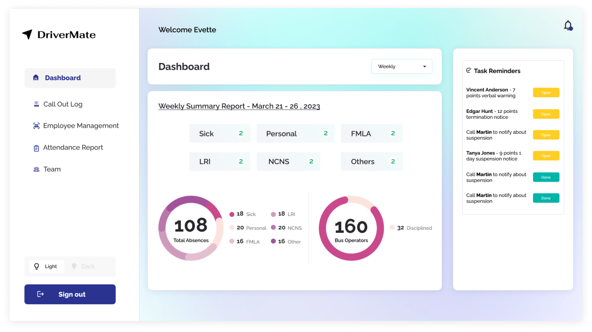
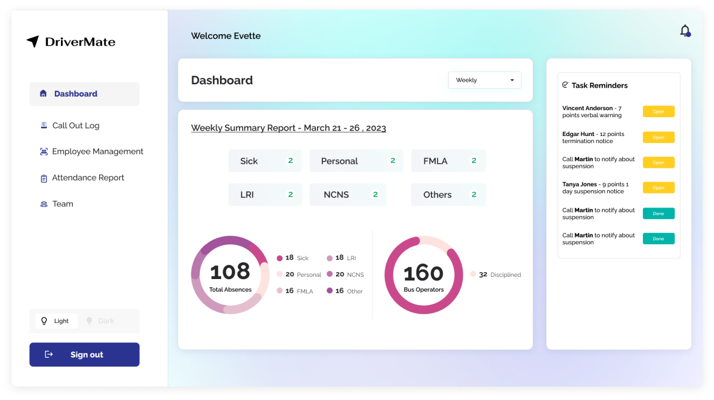

“DriverMate” is a comprehensive app used for managing driver attendance and notices, as well as scheduling and routing for bus fleets.
SaaS Application to help manage bus drivers all over the state

The customized attendance report screen of the web app is specifically designed to display the absence data of drivers, along with the reasons for their absence. This feature enables supervisors to efficiently track the attendance record of drivers and identify any patterns or issues that may arise. With this information readily available, supervisors can quickly take appropriate actions to ensure that the driver attendance remains consistent and that operations run smoothly.
 

" I am thrilled with the app that was designed for me. He did an excellent job of understanding my vision and translating it into a user-friendly and visually appealing interface. They were professional, responsive, and delivered on time. I would definitely work with them again! "